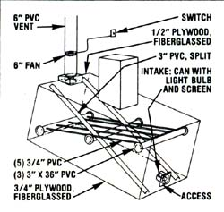

The first cold winter's work on my new home-situated atop a ridge overlooking the Kentucky River-helped me decide that I definitely wanted an indoor toilet. Almost immediately, though, I had to rule out a conventional system, since only a few inches of topsoil covered the limestone bedrock at my site. (The estimated cost of a septic system was about $2,000!) So when I heard about composting toilets, I thought my problem was solved.
I wrote to several companies that advertised such commodes, and was particularly impressed by two of the units: the Clivus Multrum and the Ecolet ... both of Swedish origin. The devices looked great, but I was alarmed to discover that I couldn't afford even the less expensive of the pair.
Then a classified ad in MOTHER came to the rescue: I wrote to Zandy Clark and Steve Tibbetts for information on homemade composting toilets. Their booklet was helpful in two ways. First, it included descriptions and diagrams explaining the innards of the commercial devices and detailing how such units manage to achieve good ventilation and decomposition of waste. (These points weren't entirely clear in the literature sent by the composters'manufacturers themselves!) Moreover, the Clark/ Tibbetts booklet showed me that homemade composting commodes had been built and would work! Even though the examples assembled by the authors didn't quite suit my needs (and the construction details were a bit sketchy), the booklet provided all the encouragement I needed to give it a try. [EDITOR'S NOTE: Unfortunately, the volume is now out of print.] At any rate, one short year later, my homemade toilet was working fine. . . and it cost me only about $200, a small amount compared with the price of either a conventional system or a commercial composter.
Before I put the structure together, though, I had to determine how to incorporate the necessary wooden box into my already framed house and bathroom area. The unit had to be small enough to slip under the dwelling and into the half-basement, but large enough to handle regular use. Also, I figured that one end of the container would have to extend out front tinder the house, so I could build in a vent pipe without cutting through the ceiling and roof. Going by those requirements, I settled on a box size of 3' X 3' X 6'.
I used 2 X 2' lumber I had on-site to frame the ends and sides, which were then covered with 112" subterranean-grade (to withstand moisture) plywood There were enough scraps of that material left to piece together a cover, and I sealed the joints with silicone caulk. For the bottom (which was likely to face the heaviest strain), I used 3/4 " marine plywood.
I was wise enough to assemble the box close to the house-since lugging the materials around told me that the finished product would be heavybut I learned too late that it's a good idea to insulate the bottom and apply a vapor barrier before the sides go on. It was almost impossible to do a good job of insulating the box once it was finished, and-as a result-the contents froze solid from January to March of the first winter. (I later added insulating sheathing, which has taken care of the problem.)
When the box was assembled-except for the top-I reinforced the corners with pipe strap and sealed all of the internal seams with polyester putty. Then I lined the interior with a base coat and two finish coats of polyester fiberglass. (This system has proved to be so waterproof that I'm sure a less expensive grade of plywood would have been satisfactory.)
My compost grid bed is made from PVC plastic pipe, as shown in the accompanying illustration. The main bed support consists of the three sections of 3" pipe running across the box. (Five pieces of 314 " material are inserted into holes in the two end crosspipes, and rest atop the middle one.) To let air into the bed, I split a length of 3 " pipe, laid the halves concave sides down (as shown), and secured their ends with partially driven, bent nails.
Before sliding the unit under the house, I put in some weeds to hold up the bed, and shoveled on about five cubic feet of peat moss. Next, the -top went on and was sealed with silicone caulk. To install the unit, I first dug out a dirt and rock cradle on a 15' slope (to help keep the composted waste moving down toward the access hatch), and two friends then helped me drag the box into position.
I used more of the scrap plywood (covered with fiberglass resin) to form the chute, and then cut holes in the floor and the top of the box to accept it. The vent system consists of a screened intake in the access door (with a light-bulb-and-can preheater, the idea for which I borrowed from Clark and Tibbetts) and a 6" PVC vent pipe that extends to six feet above the roof line. To prevent any chance of "bachpuffing" when the "hatch" is opened, I installed a duct fan, in the vent pipe, with a switch that can be operated manually whenever the need arises.
My toilet's ongoing maintenance has consisted of routine feeding-I add peat moss with each use-and a stirring about once every two weeks. After about two years, however, I found myself unable-working through the chute-to push the accumulated material far enough or evenly enough... and I soon discovered that the buildup below the chute inhibited good air circulation. The result was a pretty powerful ammonia odor!
To solve that problem, I cut an access hatch in one of the long sides of the box, so that I could distribute the wastes more evenly from front to back. After the first successful stirring, the odor disappeared almost immediately.
I've also had a few gnat invasions over the years, but they usually leave if I distribute a fresh layer of peat moss over the pile. Occasionally, I scrub down the chute with a biodegradable soap, and-approximately once a year-I unload some of the humus. Just for safety's sake, however, I compost my recycled waste further, in an outdoor pile, before putting it to use.
Though a unit like mine could be adapt ed to many different situations, I think that it's best, if possible, to include the com poster when planning a house. But mine has been far less troublesome than conventional systems I've tangled with. And even if I had the, option of a city sewer line, I wouldn't give up my low-cost, minimalmaintenance, pollution-free toilet.
|
 |
|
|